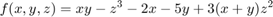
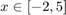
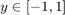
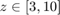
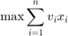
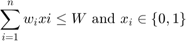

How to define Optimization Problems
This document shows how to define optimization problem and use ypea_problem class, which is a part of Yarpiz Evolutionary Algorithms Toolbox (YPEA).
Contents
Elements of an Optimization Problem
The class ypea_problem is defined to model an optimization problem. Main elements and properties of this class, are listed below.
- type, which can be either 'minimization' ('min' for short) and 'maximization' ('max' for short).
- vars, which is an array of ypea_var, and defines the decision variables and search space of the problem. To get more information on decision variables, see Decision Variables.
- obj_func, which is a function or function handle, accepting the solution structure (with fields defined by vars) and returning the valu of objective as output.
- goal, which is the desired value of objective function and can be used as a stopping criterion by optimization algorithms.
- max_nfe, which defines an upper limit on the number of function evaluations, to solve the problem. This can be used as a stopping criterion by optimization algorithms.
In addition to these parameters, there are some methods inside the class, which are used bye optimization algorithms. For example, the comparison of the solutions is completely carried out inside the problem class and the problem itself, is responsible for this.
A Classic Example
Assume that, we want to define a problem of minimizing a benchmark function, say sphere or rastrigin, in a 20-dimensional space.
Let's ceate an instance of optimization problem.
problem = ypea_problem();
To define the search space, we create a single varibale, which contains 20 real values, in the range of -10 to +10.
problem.vars = ypea_var('x', 'real', 'size', 20, 'lower_bound', -10, 'upper_bound', 10);
And, the objective is to minimize the well-known sphere function in this domain.
f = ypea_test_function('sphere');
problem.obj_func = @(sol) f(sol.x);
If it is needed to minimize the rastrigin, we may do it in this way:
f = ypea_test_function('rastrigin');
problem.obj_func = @(sol) f(sol.x);
TSP: A Combinatorial Optimization Problem
Assume that we are going to solve a Traveling Salesman Problem (TSP) using one of algorithms, in Yarpiz Evolutionary Algorithms Toolbox (YPEA).
Assume that we have 30 nodes (cities), around a circle. Let's define the number of cities:
n = 30;
Shuffle the order of nodes, to have enough randomness in the TSP problem.
t = randperm(n) - 1;
Let's place the nodes on a circle, with radius of 40, and centerd on (50,50).
R = 40; x0 = 50; y0 = 50; x = x0 + R * cos(2*pi*t/n); y = y0 + R * sin(2*pi*t/n);
Now, we are ready to calculate the distance matrix.
d = zeros(n,n); for i = 1:n for j = i+1:n d(i,j) = sqrt((x(i)-x(j))^2 + (y(i)-y(j))^2); d(j,i) = d(i,j); end end
Also, we need to define a function, that computes length of a given tour, on a graph. A one line solution, as an anonymous function, is as follows:
TourLength = @(tour) trace(d(tour ,tour([2:end 1])));
Now we have all of needed components to define the optimization problem.
To define the problem, we need an instance of Optimization Problem class.
problem = ypea_problem();
We need to define a decision variable, named Tour, of permutation type, with the length on n. This can be done by running:
problem.vars = ypea_var('Tour', 'perm', 'size', n);
And, the objective is to minimize the well-known sphere function in this domain.
problem.obj_func = @(sol) TourLength(sol.Tour);
Also, we define a goal value for our problem, which is the perimeter of the circle, in the case of our problem. By defining this goal value, as soon as the algorithm finds a solution that meets this goal, the execution of the optimization process, will be terminated.
problem.goal = 2*pi*R;
That is it. Now create an instance of any optimization algorithm in YPEA, named alg, and call the followig line of code, and solve the TSP problem defined above:
best_sol = alg.solve(problem);
A Problem with Several Decision Variables
Assume that we want to find , and , which maximizes the following objective function:

where , , and .
This problem can be defined in this way:
% Create an Instance of Optimization Problem problem = ypea_problem(); % Set the Problem Type problem.type = 'max'; % Define the Decision Variables problem.vars = [ ypea_var('x', 'real', 'lower_bound', -2, 'upper_bound', 5) ypea_var('y', 'real', 'lower_bound', -1, 'upper_bound', 1) ypea_var('z', 'real', 'lower_bound', 3, 'upper_bound', 10) ]; % Define the Objective Function f = @(x, y, z) x*y - z^3 - 2*x - 5*y + 3*(x+y)*z^2; problem.obj_func = @(sol) f(sol.x, sol.y, sol.z);
Now you may call the solve method of any instance of YPEA optimization algorithms, to solve the problem.
Binary Kapsack Problem
Assume well-known binary knapsack probelm, which is defined as:

subject to:

Assume the parameters of the problem are given by:
% Values of Items v = [9 6 8 7 6 3 6 1 6 6 7 9 9 7 6 9 6 1 2 8]; % Weights of Items w = [5 8 2 5 6 1 6 4 1 5 2 2 2 2 2 1 6 3 5 7]; % Maximum Weight W = 20; % Number of Items n = numel(v);
Let's create an instance of ypea_problem and specify its type:
problem = ypea_problem(); problem.type = 'maximization'; % or simply 'max'
The search space of the problem is given by:
problem.vars = ypea_var('x', 'binary', 'size', n);
The objetive function can be defined as:
f = @(x) sum(v.*x);
Also, the constraint of the problem, is given by:
g = @(x) sum(w.*x) - W;
which implies that, if g(x) is less than or equal to 0, the constriant is satisfied.
We may alter the definition of g to relect the violations only:
g = @(x) max(sum(w.*x) - W, 0);
Now, we are ready to define the objective function of the problem:
% Penalty Factor alpha = 100; % The Objetive Function problem.obj_func = @(sol) f(sol.x) - alpha*g(sol.x);
If the solution is in the feasible space, then the objective funcion is exactly same as the f. However, if the solution is not feasible, then some negative penalty is added, to reduce the objective value and make the solution less promising.
The optimal solution for this problem is given by:
xopt = [1 0 1 0 0 1 0 0 1 0 1 1 1 1 1 1 0 0 0 0];
The objetive value is:
f(xopt)
ans =
73
with total weight of:
sum(w.*xopt)
ans =
20
You may use any of algorithms implemented in YPEA, to solve this problem.